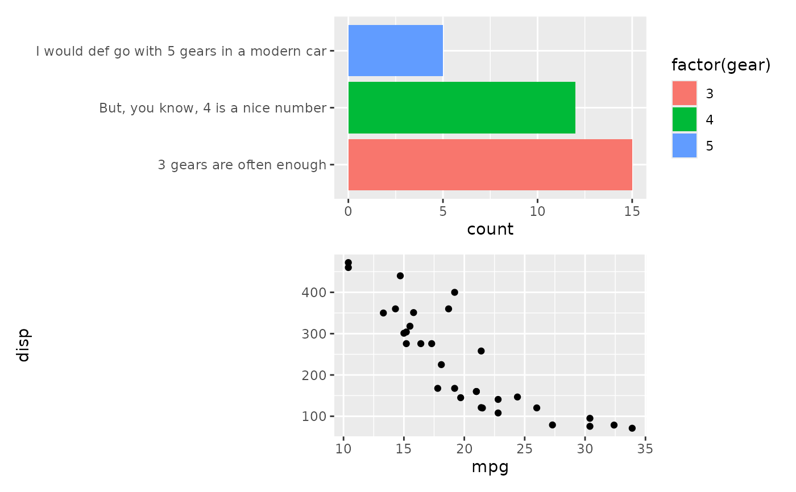
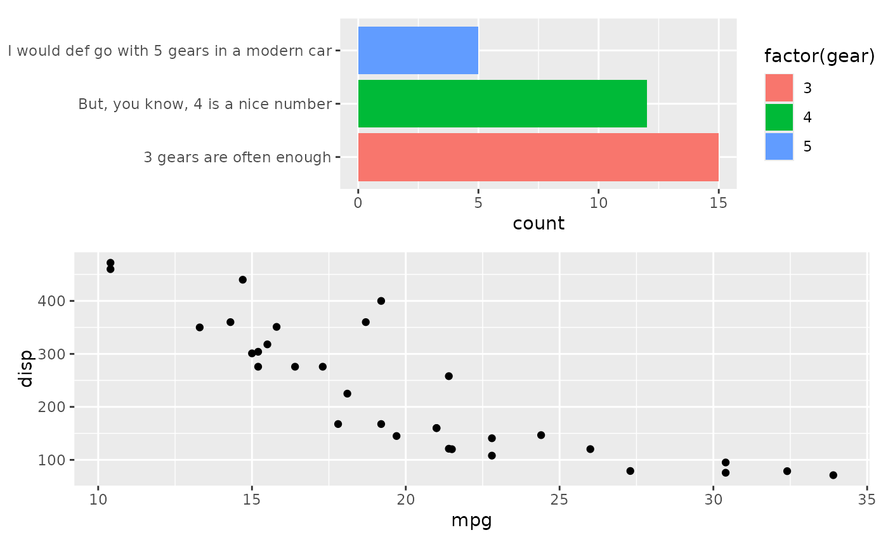
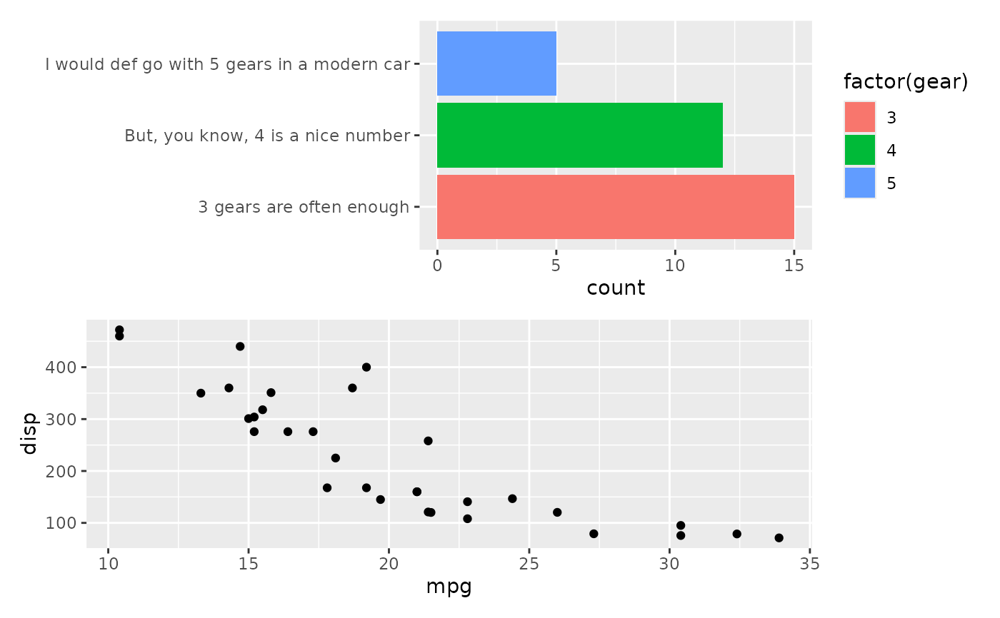
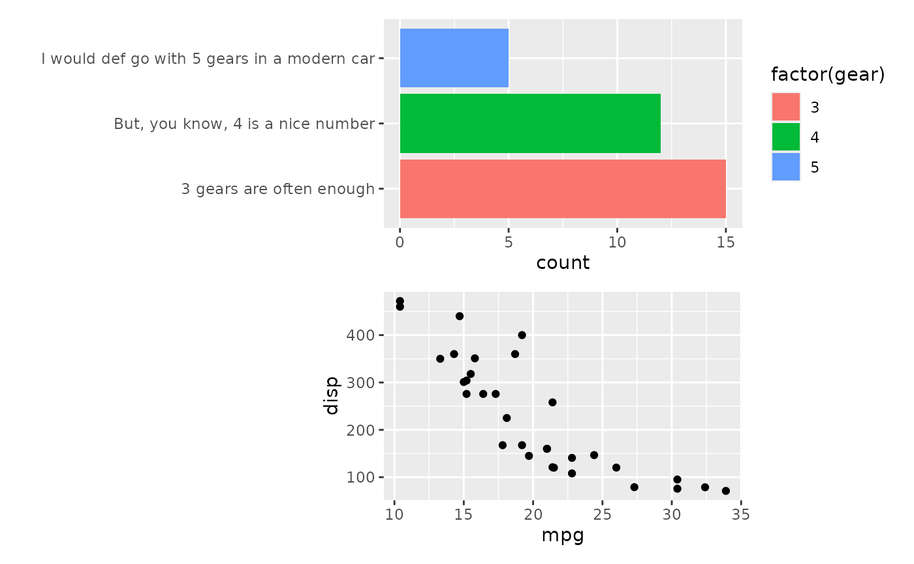
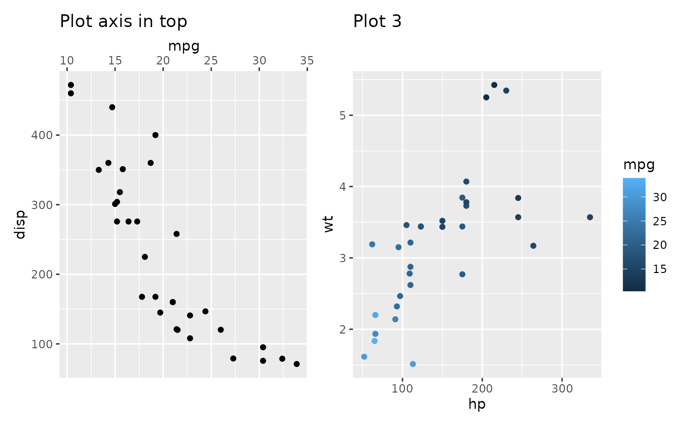
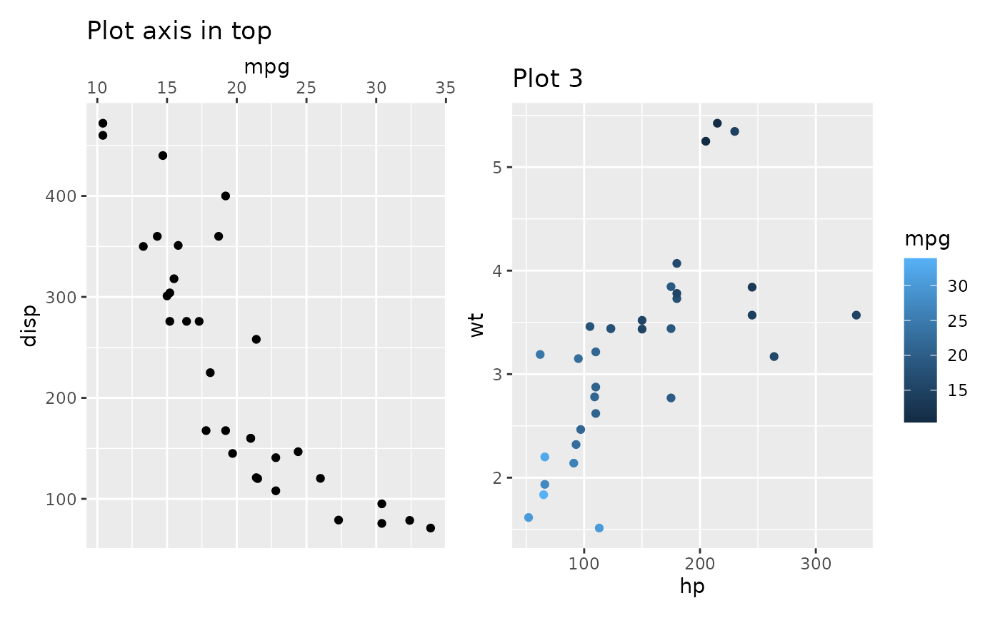
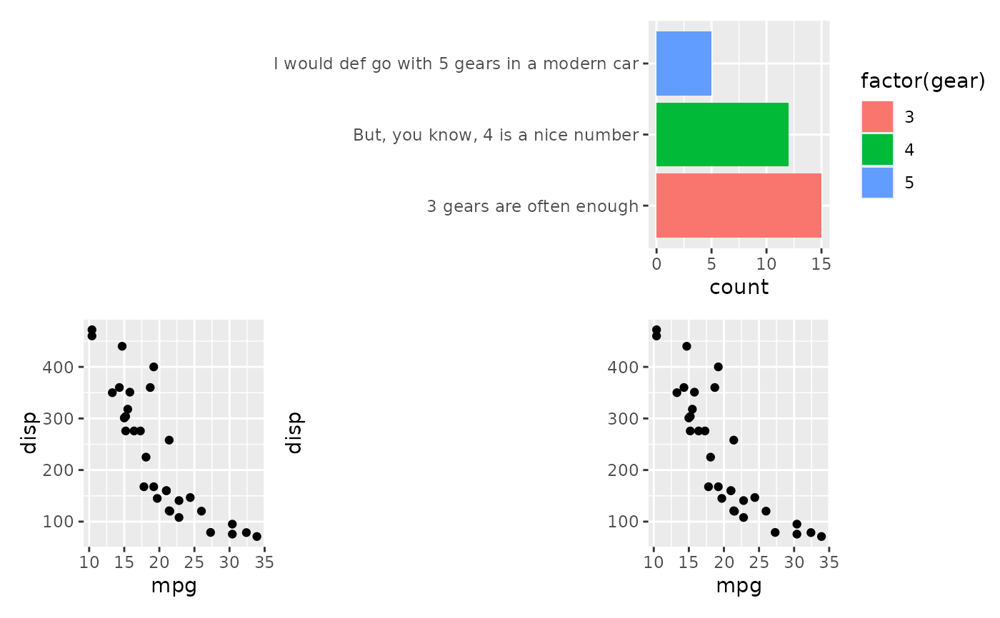
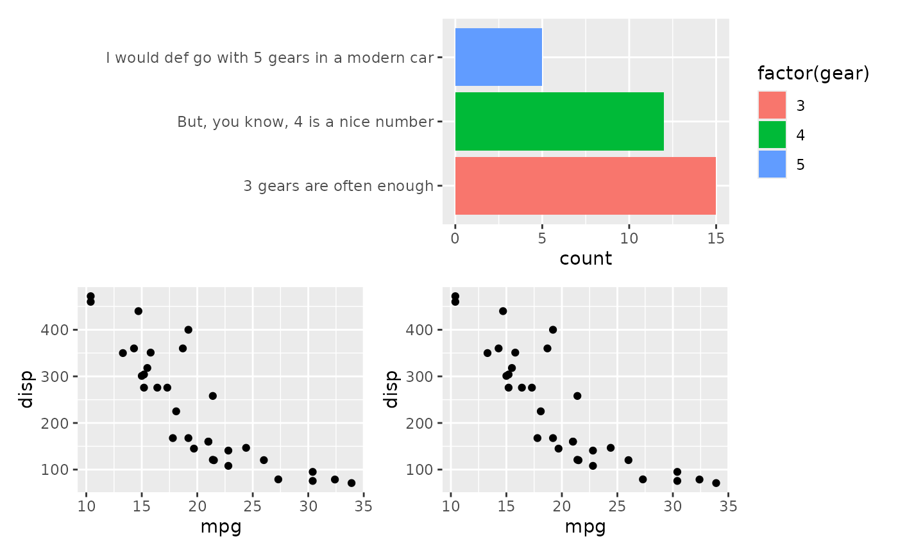

Free from alignment
Source:R/alignpatch-free-align.R, R/alignpatch-free-border.R, R/alignpatch-free-guide.R, and 3 more
free.Rdalign_plots will try to align plot panels, and every elements of the plot, following functions romove these restrictions:
free_align: if we want to compose plots without alignment of some panel axes (panel won't be aligned). we can wrap the plot withfree_align.free_border: attaches borders (e.g., axis titles, tick marks) directly to the plot panel. This keeps them visually close to the panel during alignment.free_lab(): Similar tofree_border(), but only attaches axis titles and tick labels, not full borders. It's mainly included for completeness; in most cases, combiningfree_border()andfree_space()is sufficient.free_space: Removing the ggplot element sizes when aligning.free_vp: Customize the viewport when aligning.free_guide: If we want to override the behaviour of the overall guides behaviour, we can wrap the plot withfree_guide.
Usage
free_align(plot, axes = "tlbr")
free_border(plot, borders = "tlbr")
free_guide(plot, guides = "tlbr")
free_lab(plot, labs = "tlbr")
free_space(plot, spaces = "tlbr")
free_vp(plot, x = 0.5, y = 0.5, width = NA, height = NA, ...)Arguments
- plot
A ggplot or alignpatches object.
- axes
Which axes shouldn't be aligned? A string containing one or more of
"t","l","b", and"r".- borders
Which border shouldn't be aligned? A string containing one or more of
"t","l","b", and"r".- guides
A string containing one or more of
"t","l","b","r", and"i"indicates which side of guide legends should be collected for the plot. IfNULL, no guide legends will be collected.- labs
Which axis labs to be free? A string containing one or more of
"t","l","b", and"r".- spaces
Which border spaces should be removed? A string containing one or more of
"t","l","b", and"r".- x
A numeric vector or unit object specifying x-location.
- y
A numeric vector or unit object specifying y-location.
- width
A numeric vector or unit object specifying width.
- height
A numeric vector or unit object specifying height.
- ...
Arguments passed on to
grid::viewportdefault.unitsA string indicating the default units to use if
x,y,width, orheightare only given as numeric vectors.justA string or numeric vector specifying the justification of the viewport relative to its (x, y) location. If there are two values, the first value specifies horizontal justification and the second value specifies vertical justification. Possible string values are:
"left","right","centre","center","bottom", and"top". For numeric values, 0 means left alignment and 1 means right alignment.gpAn object of class
"gpar", typically the output from a call to the functiongpar. This is basically a list of graphical parameter settings.clipOne of
"on","inherit", or"off", indicating whether to clip to the extent of this viewport, inherit the clipping region from the parent viewport, or turn clipping off altogether. For back-compatibility, a logical value ofTRUEcorresponds to"on"andFALSEcorresponds to"inherit".May also be a grob (or a gTree) that describes a clipping path or the result of a call to
as.path.maskOne of
"none"(orFALSE) or"inherit"(orTRUE) or a grob (or a gTree) or the result of call toas.mask. This specifies that the viewport should have no mask, or it should inherit the mask of its parent, or it should have its own mask, as described by the grob.xscaleA numeric vector of length two indicating the minimum and maximum on the x-scale. The limits may not be identical.
yscaleA numeric vector of length two indicating the minimum and maximum on the y-scale. The limits may not be identical.
angleA numeric value indicating the angle of rotation of the viewport. Positive values indicate the amount of rotation, in degrees, anticlockwise from the positive x-axis.
layoutA Grid layout object which splits the viewport into subregions.
layout.pos.rowA numeric vector giving the rows occupied by this viewport in its parent's layout.
layout.pos.colA numeric vector giving the columns occupied by this viewport in its parent's layout.
nameA character value to uniquely identify the viewport once it has been pushed onto the viewport tree.
Value
free_align: A modified version ofplotwith afree_alignclass.
free_border: A modified version ofplotwith afree_borderclass.
free_guide: A modified version ofplotwith afree_guideclass.
free_lab: A modified version ofplotwith afree_labclass.
free_space: A modified version ofplotwith afree_spaceclass.
free_vp: A modified version ofplotwith afree_vpclass.
Examples
# directly copied from `patchwork`
# Sometimes you have a plot that defies good composition alginment, e.g. due
# to long axis labels
p1 <- ggplot(mtcars) +
geom_bar(aes(y = factor(gear), fill = factor(gear))) +
scale_y_discrete(
"",
labels = c(
"3 gears are often enough",
"But, you know, 4 is a nice number",
"I would def go with 5 gears in a modern car"
)
)
# When combined with other plots it ends up looking bad
p2 <- ggplot(mtcars) +
geom_point(aes(mpg, disp))
align_plots(p1, p2, ncol = 1L)

# We can fix this be using `free_align`
align_plots(free_align(p1), p2, ncol = 1L)

# If we still want the panels to be aligned to the right, we can choose to
# free only the left side
align_plots(free_align(p1, axes = "l"), p2, ncol = 1L)

# We could use `free_lab` to fix the layout in a different way
align_plots(p1, free_lab(p2), ncol = 1L)

# `free_border` is similar with `free_lab`, they have a distinction in terms
# of placement on either the top or bottom side of the panel. Specifically,
# the top side contains the `title` and `subtitle`, while the bottom side
# contains the `caption`. free_lab() does not attach these elements in the
# panel area.
p3 <- ggplot(mtcars) +
geom_point(aes(hp, wt, colour = mpg)) +
ggtitle("Plot 3")
p_axis_top <- ggplot(mtcars) +
geom_point(aes(mpg, disp)) +
ggtitle("Plot axis in top") +
scale_x_continuous(position = "top")
align_plots(p_axis_top, free_lab(p3))

align_plots(p_axis_top, free_border(p3))

# Another issue is that long labels can occupy much spaces
align_plots(NULL, p1, p2, p2)

# This can be fixed with `free_space`
align_plots(NULL, free_space(p1, "l"), p2, p2)
